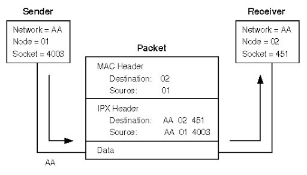

|  |
Packet forwarding is the basic method for sharing information across systems on a network. Packets are transferred between a source interface and a destination interface, usually on two different systems. When you issue a command or send a message to a nonlocal interface, your system forwards those packets onto the local network. The interface with the destination IP address that is specified in the packet headers then retrieves the packets from the local network. If the destination address is not on the local network, the packets are then forwarded to the next adjacent network, or hop. By default, packet forwarding is automatically configured when you install the Solaris OS.
Routing is the process by which systems decide where to send a packet. Routing protocols on a system “discover” the other systems on the local network. When the source system and the destination system are on the same local network, the path that packets travel between them is called a direct route. If a packet must travel at least one hop beyond its source system, the path between the source system and destination system is called an indirect route. The routing protocols learn the path to a destination interface and retain data about known routes in the system's routing table.